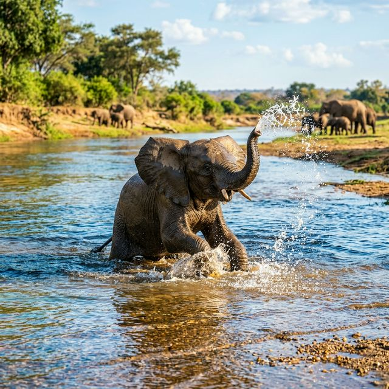
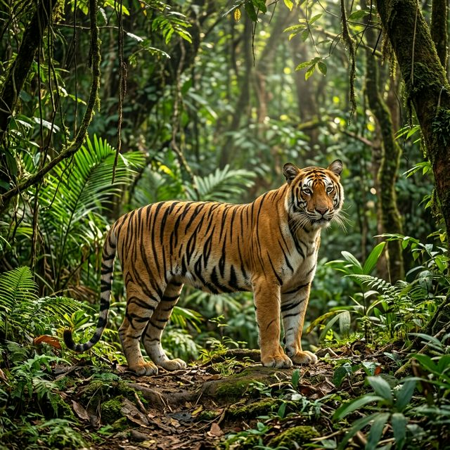
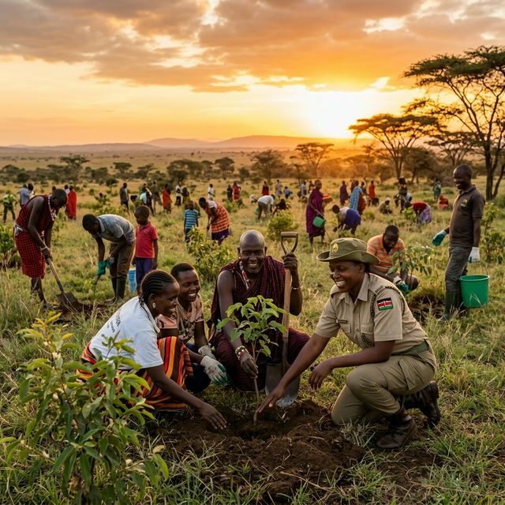

Hope for the Little
Meeting 'Mara', the orphaned elephant calf, and how our rescue center in Kenya is helping her find.
Read Story
Real stories of survival and conservation from around the globe. Follow our field teams as they navigate the complexities of protecting wildlife in an ever-changing world.
Meeting 'Mara', the orphaned elephant calf, and how our rescue center in Kenya is helping her find.
Read Story
The first successful deployment of our AI camera grid to monitor cryptic leopards in the Indian.
Read Story
Patrolling the Serengeti at 3 AM. The challenges and triumphs of the men and women protecting our.
Read StorySuccessful deployment of our camera grid to monitor cryptic leopards are powerful.
Read Story
Protecting elephant herds through advanced tracking systems and ranger patrols.
Read Story
Community-driven reforestation projects restoring lost ecosystems and wildlife habitats.
Read Story
Using GPS collars to monitor lion movements and reduce wildlife sanctuary conflicts.
Read Story
Combating poaching with surveillance drones and dedicated protection teams.
Read Story